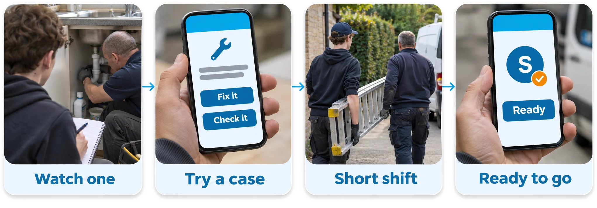

Meet an Apprentice




- Problem
- I want to train someone but cannot spare days to find out if they are right.
- Who has it
- Solo trade owners and students from local programs.
- Nearest evidence
- No post found yet. Nearest: Classet: analysis of home-service job applications identifies significant hiring friction, 2026-11-04